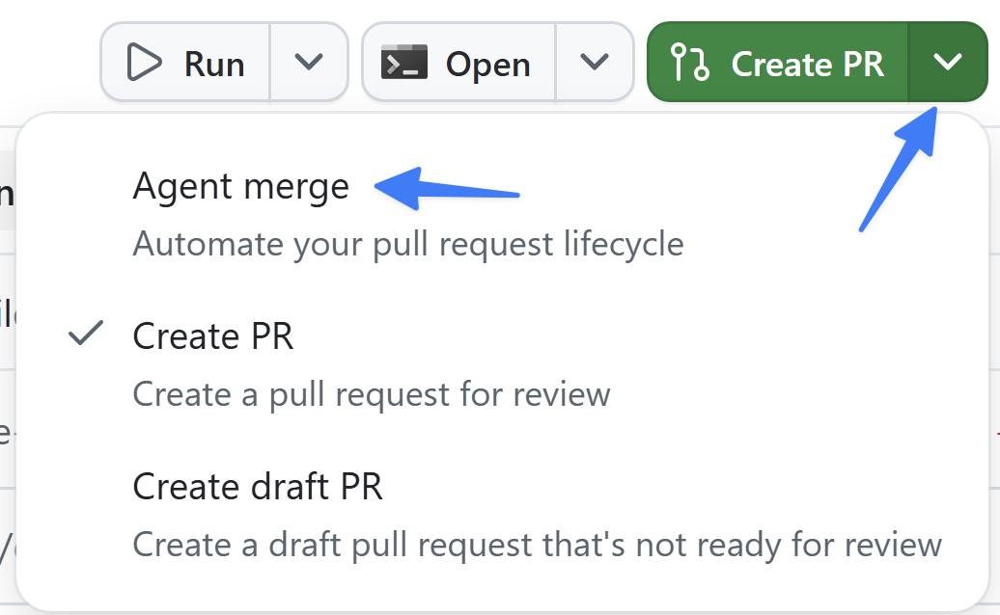
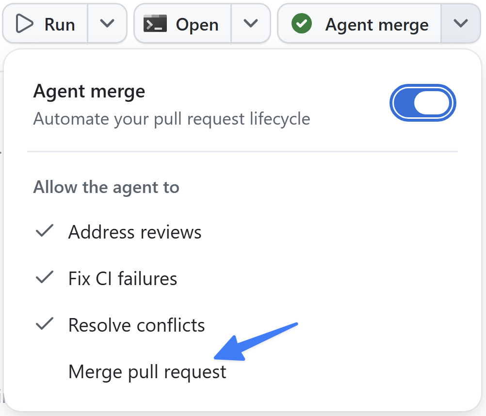

フィルター機能の構築と検証が完了し、ブラウザーで動作することも確認できました。最後のステップはマージです。このハーネスではすでに2回マージしており、どちらも pull request を作成して github.com で自分でマージしました。今回は、pull request のライフサイクル全体をアプリ内から管理する Agent Merge に処理を任せます。
このレッスンでは、次の内容を学習します。
- Agent Merge の概要と、マージのライフサイクルを自動化する仕組みを学ぶ。
- フィルター機能のセッションで Agent Merge を有効にする。
- pull request の作成、CI の実行、すべて成功した後のマージを確認する。
シナリオ
ここ数回のモジュールでは、コードの作成から Copilot による UI の直接検証まで、さまざまなレベルの自動化を確認しました。開発をさらに高速化するために、Tailspin Toys は審査および検証済みの pull request を自動的にマージする方法を検討しています。
Agent Merge の概要
Agent Merge を使うと、Copilot app で pull request をマージするまでの最終工程を自動化できます。有効にすると、アプリのセッションが pull request を読み取り、失敗した CI チェックの修正、レビューコメントへの対応、必要に応じたリベースなど、マージを妨げる問題に対処します。そして GitHub で許可され次第、pull request をマージします。バックグラウンドで動作し、アプリを再起動しても継続し、pull request がマージされると自動的に無効になります。
ここまでは、github.com で自分で Merge pull request を選択していました。Agent Merge はその責任をエージェントに移すため、エージェントが PR の完了までを管理している間に次のタスクへ進めます。作業のレビューと承認は引き続き自分で行い、エージェントには機械的な最終工程だけを任せます。
Agent Merge で PR を管理する
コードを手動でレビューし、テストを実行し、Copilot による UI の検証も完了しました。新しいコードをコードベースにマージします。Agent Merge に PR を継続的インテグレーション (CI) のプロセスからマージまで管理させます。
- 前のモジュールでフィルター機能を追加していたセッションに戻ります。
- 右上隅にある Create PR の横のドロップダウンを選択します。
- Agent merge を選択して Agent Merge を有効にします。

- ボタンのテキストが Agent merge に変わります。
- Agent merge ボタンを選択し、Agent Merge のプロセスを開始します。
Copilot app が PR の作成と管理を開始します。最初にプロジェクトを調査して PR の最適な作成方法を判断し、新しい PR を作成します。
しばらくすると、Copilot が再び作業を開始し、リポジトリ上ですべてのテストを実行する CI プロセスなど、PR の条件を確認します。ほかのチームメンバーによるレビュー、実行が必要なチェック (CI プロセス)、PR をマージできるかどうかのステータスを報告します。
- Agent merge の横にあるドロップダウンを選択してから Merge pull request を選択し、Agent Merge に pull request のマージを許可します。

- すべての CI プロセスが成功すると、つまりテストに合格すると、Copilot が pull request をマージします。
まとめと次のステップ
コードの生成、テストと検証、pull request のプロセスなど、開発プロセスの複数の部分を自動化しました。具体的には、次の作業を行いました。
- Agent Merge の概要と、マージのライフサイクルを自動化する仕組みを学習した。
- フィルター機能のセッションで Agent Merge を有効にした。
- pull request の作成、CI の実行、すべて成功した後のマージを確認した。
次は、エージェントと一緒に作業を計画して視覚化する、より高度な方法であるキャンバスを確認します。レッスン 7「キャンバスを使った計画」に進んでください。